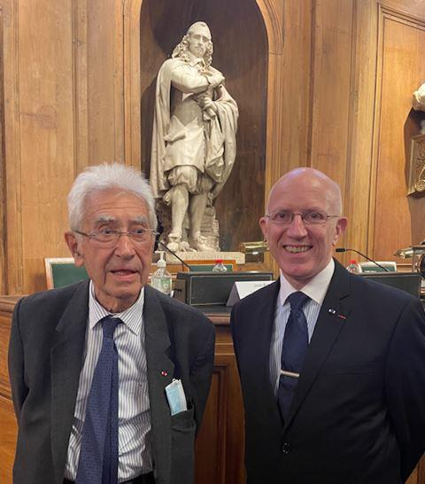
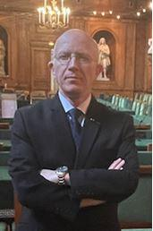
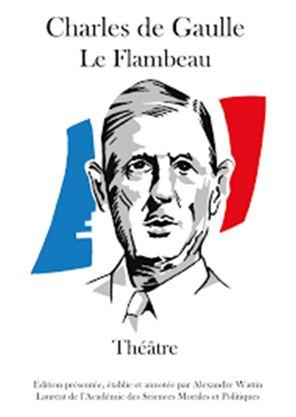
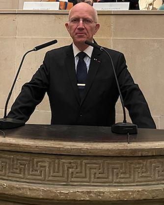
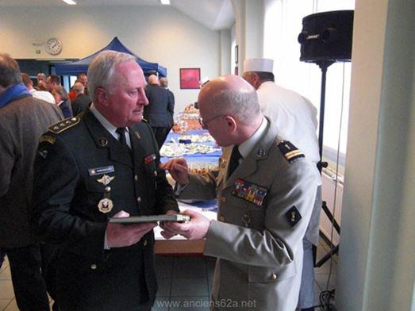
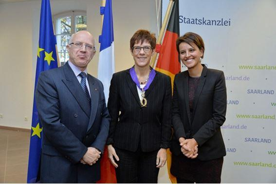
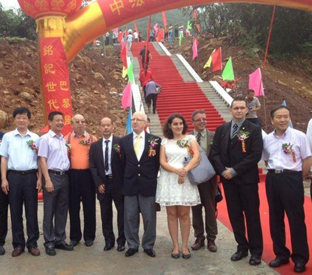
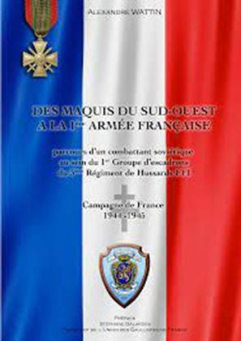

Originaire d’un pays dont la langue officielle n’est pas le français, Alexandre Wattin est citoyen d’origine russe par son père (qui sera naturalisé) et allemand par sa mère. Il pratique la langue de Goethe dans la vie quotidienne puis de Molière favorisée par une culture francophile au sein du système éducatif des forces françaises en Allemagne. Son parcours dans la francophonie s’inscrit ensuite dans un schéma passionnant en faisant de lui un ambassadeur de la langue française dans les pays où il a vécu. Portrait.
« Après le pain, l’éducation est le premier besoin d’un peuple, » disait Danton avec raison et le fait de dispenser cette éducation est sans conteste l’action la plus noble que l’on puisse espérer accomplir, l‘éduction des peuples peu s’entendre de multiples façons.
« Ma Patrie, c'est la langue française », à l'image de ces mots d'Albert Camus, Alexandre Wattin s’engage depuis des décennies à défendre la langue française et la Francophonie ainsi que la diversité culturelle un peu partout dans le monde au gré de ses périples que ce soit en Europe, en Afrique ou dans le Caucase. L’engagement de l’intéressé comme bénévole est exceptionnel, aussi bien dans le domaine de l’éducation et de la promotion de la langue française à l’étranger et cherche son pareil.
Né en 1959 d’un père émigré russe naturalisé français et d’une mère allemande. Il grandit dans le milieu germanophone dans la célèbre ville de Baden-Baden où il sera scolarisé dans le système éducatif français dès les petites classes jusqu’à l’âge de 17 ans, date anniversaire où il découvrira la France en devançant son appel militaire. Devenu bilingue et imprégné de plusieurs cultures il n’aura de cesse de s’engager à promouvoir sa langue d’adoption en Allemagne au grès de ses affectations et dans les pays où il résidera.
Dans ce texte je ne puise que quelques exemples notoires parmi la multitude d’actions menées par l’intéressé et qui ne sont qu’une modeste palette de ses très nombreuses initiatives menées en faveur de la francophonie. Rédacteur, éditeur, écrivain, et conférencier, les multiples talents qu’il démontre tout au long de sa vie professionnelle et associative reflètent un engagement de tous les instants.
Après quelques années passées en France, Alexandre Wattin, est affecté en 1980 dans la célèbre ville universitaire de Trèves en Allemagne où ses connaissances linguistiques l’amèneront à servir d’interprète et de traducteur jusqu’en 1984. A cette occasion ; nombreuses sont ses rencontres avec des étudiants allemands envers lesquels il s’évertue de promouvoir la langue et la culture française.
Rejoignant la République du Tchad comme jeune volontaire français dans le cadre d’une opération militaire de 1987 à 1989, il se rend rapidement compte que l’environnement économique et sécuritaire de la sous-région de l’époque ne permettait presqu’aucun moyen de scolarisation.
Ayant d’excellentes relations avec ses amis Tchadiens il s’évertue à titre personnel et bénévole à fournir promptement à de nombreuses familles des moyens pour que leurs enfants possèdent les outils fondamentaux pour mieux appréhender l’apprentissage du français en fournissant par ailleurs crayons, livres et cahiers. Avec l’aide de ses contacts en métropole il se fait régulièrement expédier des ouvrages et du matériel scolaire pour fournir également de petites écoles en brousse qui se trouvent éloignés de la capitale lors de ses déplacements.
Ainsi, il a modestement tenté d’apporter jusqu’en 1989, date de son retour en France une aide subséquente à l’apprentissage et au développement du français tant dans des villages reculés du Tchad que dans la capitale N’Djamena.
Il quitte le service militaire actif en 1995 et reprend ses études jusqu’en 1999. Date à laquelle il quitte Sciences Po Lille en deuxième année suite à sa nomination à Paris aux responsabilités de chef de cabinet d’un proche d’André Malraux*, ancien ministre au sein de la Commission Interministérielle Franco-Allemande où l’une de ses activités majeures est la promotion de l’apprentissage du français en Allemagne et de l’allemand en France.
Durant ces fonctions, il rencontre de part et d’autre du Rhin de nombreux hauts responsables institutionnels, ministériels, du monde universitaire et scolaire allemand auprès desquels il engage de différentes actions pour promouvoir l’apprentissage du français. A ce titre, il coopère avec les ministères de l’éducation des deux pays.
Il s’investit en particulier dans quatre Länder, où l’apprentissage du français est particulièrement dynamique : dans les Länder frontaliers que sont le Bade-Wurtemberg, la Rhénanie-Palatinat, la Sarre, mais également ….en Thuringe.
Nommé en 2002, Secrétaire général de la Fédération des associations franco allemandes, il participe aux projets pédagogiques et aux actions engagées en direction des jeunes étudiants apprenant le français sur toute l’Allemagne en étroite coopération avec l’Office Franco-Allemand pour la Jeunesse (OFAJ).
Auteur et conférencier, il s’attache à faire connaître et participer au développement de la francophonie auprès de ses interlocuteurs du monde germanophone. Pour Alexandre Wattin la promotion de la langue du partenaire est au cœur de la coopération culturelle franco-allemande, telle qu’elle est inscrite dans l’accord culturel franco-allemand de 1955 et dans le Traité de l’Élysée de 1963 conclu entre les deux pays. A ce titre, il sera notamment un soutien actif dans le programme « Tandem », mené par la gendarmerie en Alsace. Ce dispositif consistait à réunir un policier allemand et un gendarme ou policier français et à les initier à la langue du partenaire afin de faciliter la compréhension lors des échanges et des actions communes en matière de sécurité et de défense.
La promotion du français participe de cette défense de la diversité des expressions culturelles, en s’opposant à l’uniformisation et à la globalisation par l’anglais et la culture américaine. Mais vanter la diversité des expressions culturelles entend laisser leur place aux autres langues telles que l’allemand. Pour son engagement en faveur de la coopération linguistique il est Lauréat en 2002 de la médaille d’honneur de l’OFAJ et le président de la République fédérale d’Allemagne lui attribue la même année la croix du mérite fédérale.
S’appuyant sur les nombreuses déclarations officielles entre les gouvernements français et allemands, touchant à la nécessité de relancer l’apprentissage de la langue du partenaire, Alexandre Wattin redouble d’efforts pour promouvoir le français en Allemagne. Selon son constat, il y a en effet urgence. Celui-ci est sans dans toute l’Europe, vit en Allemagne des lendemains qui déchantent. Ce déclassement l’amène également à reconsidérer le rapport à la langue allemande en France, dans le sens du pluralisme et du partage.
Ainsi il n'a jamais cessé de se poser des questions sur le bilinguisme et la destinée des langues, du local au global. Pour lui la langue est un élément fondamental d'une culture, car on appréhende et on découvre le monde par sa langue. Chaque langue porte en elle une vision du monde qu'elle nous imprime. En faisant la promotion de la langue française en Allemagne il sait que, par son apprentissage, il imprègne également les jeunes étudiants allemands de la culture française. La pertinence de ses interventions fait que le Ministre Plénipotentiaire pour les affaires culturelles franco-allemandes lui fait l’honneur d’un avant-propos pour l’un de ces ouvrages. Il est appelé à intervenir dans différents colloques dont celui de l’Université de Bochum où il promeut l’apprentissage du français langue étrangère.
En Allemagne comme en France, il sera à l’origine de nombreuses actions culturelles à l’occasion notamment des commémorations du 40ème anniversaire du Traité de l’Élysée, où, en étroite collaboration avec les services de l’Ambassade d’Allemagne, de la Fondation Charles de Gaulle et du Haut Conseil culturel franco-allemand, il sera le rédacteur adjoint de la publication de l’ouvrage officiel distribué aux institutions et aux personnalités de part et d’autre du Rhin.
Secrétaire Général du Mémorial de Gaulle-Adenauer à Berlin en 2003, Il travaille, dès le début du projet de fabrication de la stèle, en étroite collaboration avec l’artiste Chantal de la Chauvinière Riant, et jusqu’à son inauguration. Il a l’entière responsabilité de l’organisation de cette opération et intervient, avec ses homologues allemands de la Konrad Adenauer Stiftung jusqu’à la mise en place de la stèle. L’attention particulière apportée à l’organisation et l’écho médiatique de cette initiative lui vaut d’être personnellement cité par le Président de la République et le Président d’honneur du Mémorial, Monsieur Pierre Messmer ancien Premier Ministre, à l’occasion des discours prononcés à cette occasion.
Avec l’autorisation de l’Amiral Philippe de Gaulle il a l’idée d’enrichir cette commémoration bilatérale par la réalisation d’une édition bilingue du Flambeau, pièce de théâtre écrite par Charles de Gaulle en 1927. Alexandre Wattin a eu fréquemment l'opportunité d’attirer l’attention auprès de ses amis des milieux culturels d’outre-Rhin sur l’existence de cette pièce. Aussi, nombreux furent ses amis Allemands qui l’incitèrent à réaliser une édition en langue allemande. Le principal défi fut de trouver un traducteur capable d’interpréter subtilement les écrits du Général sans en dénaturer ni l’esprit ni la finesse d’écriture.
Résidant à Francfort sur le Main, il apporte son soutien dans le domaine de l’apprentissage du français en Allemagne en étroite coopération avec de nombreux directeurs de d’Instituts Français et tout particulièrement ceux de Francfort, Mayence et de Sarrebruck et concours de façon remarquable à la connaissance du patrimoine linguistique français en Allemagne.
Il n’a de cesse de mettre son talent pédagogique au service de la diffusion et de l’apprentissage de la langue française auprès de notre partenaire privilégié. Les autorités allemandes reconnaissent son engagement en lui demandant régulièrement de faire des conférences auprès de leurs hauts fonctionnaires.
C’est ainsi que durant plusieurs années il a régulièrement dispensé des cours bénévoles à l’Office fédéral des langues ainsi que l’École fédérale d’administration. En outre le gouvernement de l’État libre de Bavière l’invite régulièrement à participer au célèbre séminaire franco-allemand de Fischbachau. Tous ces échanges se font en français et ont amené de nombreux fonctionnaires allemands à découvrir une seconde vocation professionnelle grâce à l’apprentissage du français.
Intervenant dans l’organisation des journées d’appel à la préparation défense en Allemagne il a en charge de nombreux jeunes français recensés annuellement. À cette occasion il mesure le déficit linguistique de certains jeunes « français » de l’étranger afin de proposer des solutions de relance de l’apprentissage de la langue nationale. Il est invité à participer à des conférences où il a su enthousiasmer de jeunes scolaires allemands.
Il se distingue en 2004 par une aide importante dans plusieurs expositions ayant la France comme thème au Mittelrhein Museum de Coblence, où il contribuera à l’attribution de la citoyenneté d’honneur du président Giscard d’Estaing.
Lors des célébrations du bicentenaire du Code civil, il participe au colloque organisé par les Ministres de la justice des Länder de Sarre, de Rhénanie Palatinat et de Rhénanie Nord Westphalie, en présence de Guy Canivet Président de la Cour de cassation. Sur son initiative et en collaboration avec le directeur des éditions Stroemfeld, il a pu symboliquement présenter et offrir à chaque Ministre et au Président Canivet la seule réimpression et première édition franco-allemande du Code civil de 1808.
Les symboles jouent un rôle essentiel de liaison et de communication entre les individus de part et d'autre du Rhin. Aussi, Alexandre Wattin apportera sa modeste contribution à consacrer de façon originale l'amitié franco-allemande en instaurant avec l’aide de l’Académie des sciences morales et politiques un prix qui souligne l’attachement de nos deux peuples pour l’Europe destinés à récompenser un ouvrage concernant la coopération bilatérale s’y ajoute un Prix d’Honneur remis à des personnalités ayant contribué de manière significative et dans tous les domaines à l’amitié franco-allemande mais surtout à la promotion de l’apprentissage de la langue française. Le Prix obtiendra un vif succès et de nombreuses personnalités en sont titulaires tels que La Fondation Schuman, l’ambassadeur (er) Bitterlich, le Conseil franco-allemand de défense et de sécurité, et dernièrement l’ancien Ministre Président de Bavière.
Son engagement bénévole en faveur de la francophonie reconnue, il est appelé par le secrétaire perpétuel de l’Académie des Sciences Morales et Politiques à intégrer en 2005 le Conseil scientifique de Canal Académie, magazine hebdomadaire en ligne d’analyses, de réflexions et de débats, sur l’actualité générale, politique et culturelle, vue par les académiciens. Canal Académie diffuse les analyses et les débats des Académies regroupées au sein de l’Institut de France. Elle présente des programmes nouveaux diffusés 24 heures sur 24, 7 jours sur 7. Dès la création, Alexandre Wattin est membre du Club Canal Académie afin d'affirmer son partenariat avec la première radio académique francophone sur Internet.
Membre de l'association française Frères d'Armes, créée par les ministères de la Défense et de la Coopération et placée sous le haut patronage du Président de la République Alexandre Wattin s’investit, durant ces années d’officier de réserve, à faciliter l'accueil et le séjour en France des stagiaires militaires étrangers, de contribuer à leur insertion dans la société française ; de mettre en valeur et d'entretenir les liens militaires, historiques et culturels entre la France et de nombreux pays étrangers de maintenir le contact avec les anciens stagiaires étrangers après leur retour dans leur pays d'origine. Son action s'exerce en complément des activités officielles organisées par les états-majors et le commandement des écoles d'accueil.
Phalériste reconnu et membre de l’éminente Société d'histoire des ordres et décorations, IVe section de l'École Pratique des Hautes Études, il traduit de nombreux textes allemands en langue française afin d’élargir la lecture de certains documents spécifiques afin de faciliter le travail de chercheurs français. Depuis quelques années il collabore au sein de la rédaction de la Revue européenne d’histoire des ordres et décorations « La Phalère » qui publie de nombreux articles et ouvrages de références.
Afin d'apporter un supplément d'âme à la coopération franco-allemande, Alexandre Wattin s’engage dans un projet d’agrandissement du « Musée Fort Joseph » à Mayence, en créant une salle retraçant la présence militaire française en Rhénanie Palatinat de 1919 à nos jours. Installé au cœur de la ville de Mayence, ce musée s’inscrit dans le cadre du devoir de mémoire partagé. Sous le haut patronage du Président de la République, ces salles ont été inaugurées le 13 septembre 2008 par de hautes personnalités de part et d’autre du Rhin. Alexandre Wattin aura la surprise d’être honoré par le Maire de Mayence du titre de conservateur honoraire du Musée. Il continue depuis lors à contribuer à l’enrichissement muséographique et à apporter son expertise dans ce domaine historique qui met en valeur la présence française dans cette ville.
En 2012, il sera distingué par le ministre de l’Éducation nationale de la croix de commandeur dans l’ordre des Palmes académiques pour sa contribution à la promotion de la langue française et à la connaissance du patrimoine culturel français.
Pour le cinquantième anniversaire du traité de l’Élysée il obtient, en qualité de Président de l’ORFACE, du ministre de l’industrie la création d’un timbre commémoratif. Les services de la Poste bénéficient grâce à son intervention le concours du dessinateur caricaturiste et ambassadeur de l’Unesco Tomi Ungerer.
La même année Alexandre Wattin reçoit pour son engagement culturel en l’honneur du cinquantenaire du traité franco-allemand de 1963 le Prix Allen des mains de Gérard Dériot, sénateur de l’Allier, questeur du Sénat, en présence de Xavier Darcos et d’autres éminentes personnalités.
Les hasards du calendrier politique ont été le théâtre de deux actions majeures dans la coopération franco-chinoise. En effet, la France a accueilli le 30 juin 2015 le Premier ministre chinois, Li Keqiang, en visite officielle en France pour trois jours. À l’issue de cette visite, le 4 juillet 2015, Alexandre Wattin, a eu l’honneur d‘inaugurer en Chine une stèle érigée en l’honneur de l’amitié Franco-chinoise initié par le Centre de coopération franco-germano-chinois à Putian dans la province du Fujian.
Fort de son expérience, Alexandre Wattin a pu apporter toute son expertise technique et administrative aboutissant à la finalisation de ce grand projet. Outre le fait, que nos deux pays célébraient le cinquantième anniversaire de la reconnaissance de la république populaire de Chine par la France, un accent particulier a été mis sur le 100ème anniversaire de l’arrivée des premiers travailleurs chinois venus soutenir l’effort de guerre des alliées durant la Première Guerre mondiale.
Reçue par les autorités locales et de nombreuses personnalités la délégation française a pu se rendre compte de l’importance que revêt pour la Chine l’amitié entre nos deux pays. Un séjour qui aura permis de conforter les liens déjà existants mais également d’en créer de nouveaux auprès de Chinois passionnés de littérature française.
En août 2015 il rejoint la République de Djibouti où jusqu’en 2018 comme membre de l’Association des membres de l’ordre des Palmes académiques, il œuvre bénévolement à développer des actions en direction de la jeunesse djiboutienne et tout particulièrement au sein de l’École de la nativité où il est d’une aide des plus précieuses pour le directeur de l’établissement ainsi que pour le personnel enseignant durant ces trois années passées dans la corne de l’Afrique. Dans ce cadre il collabore avec le directeur de l’institut Français et les hautes autorités locales. C’est sur son intervention que sera décoré le ministre de l’enseignement supérieur de la République de Djibouti.
De 2018 à juillet 2021, il réside en République d’Azerbaïdjan, réserviste citoyen de l’Éducation nationale, il apporte une fois encore son aide en faveur des jeunes étudiants azerbaïdjanais au sein du Lycée français de Bakou, dont il préside l’association des parents d’élèves, en dispensant à la demande de la direction des cours d’histoire en tandem avec le professeur titulaire. Il donne également des cours de conversation en langue française et des cours de préparation aux divers examens dans un établissement universitaire privé en préparant l'accès de futurs étudiants azerbaïdjanais aux établissements supérieurs français et permet ainsi à plusieurs d’intégrer un premier cycle de l'enseignement supérieur français.
Enfin, les lecteurs fidèles de notre revue ne l’ignorent pas, Alexandre Wattin participe régulièrement à la rédaction de Méthode, dont il est membre du comité de rédaction depuis plusieurs années.
Infatigable promoteur de la culture française, cet érudit bilingue qu’est Alexandre Wattin n’a de cesse de mettre son talent pédagogique au service de l’apprentissage de la langue et de la culture française et concourt, de façon remarquable, à la connaissance du patrimoine culturel et linguistique français à l’étranger. En plagiant une formule du Maréchal de Lattre de Tassigny « Donnez-moi 100 Wattin et je sauve la langue française. »
F. M.
NOTE
Il s’agit d’André Bord, ancien ministre, qui a combattu aux côtés d’André Malraux au sein de la célèbre Brigade Alsace-Lorraine.
Partager cette page